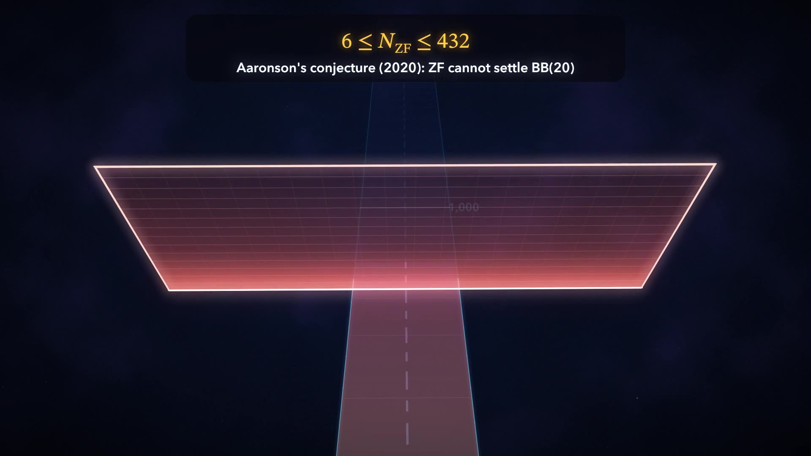

Animated explainers
Videos
Short films on theoretical computer science, rendered from scratch — Turing machines, computability, and the places where proof runs out.
-
The Busy Beaver
where mathematics runs out
The Busy Beaver function is finite, exact, and — unless mathematics itself is broken — provably out of reach. A 3D tour from a three-state Turing machine up to the point where ZF set theory runs out.
- What a Turing machine is, and the halting problem in miniature
- BB(1) through BB(5), closing on the 5-state champion
- Why BB(6) resists, and the independence results that bound what ZF can prove

Aaronson’s conjecture (2020): ZF set theory cannot settle BB(20) — the value is fixed, yet unprovable.